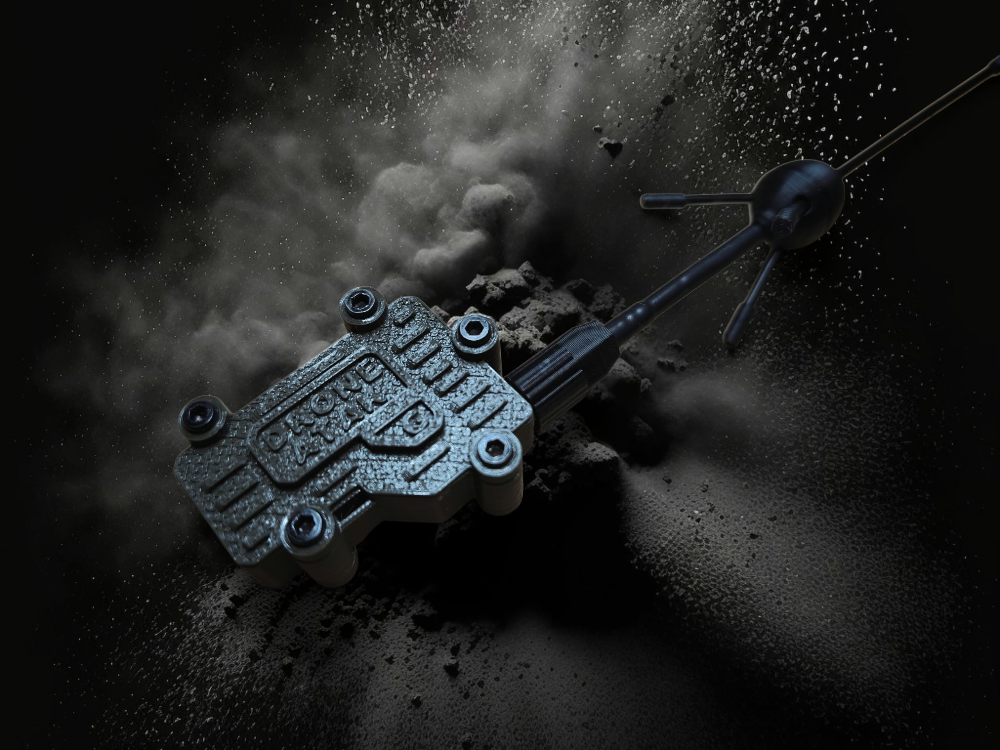
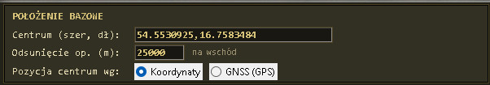
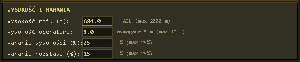
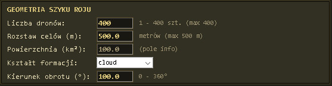
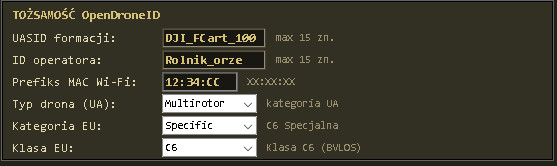
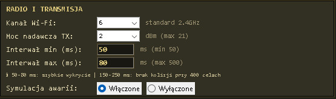
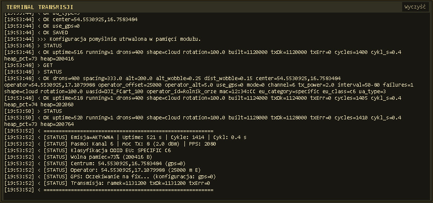

DroneGen — Oprogramowanie i Sprzęt

Możliwości systemu
DroneGen to zaawansowany system szkoleniowy, dostępny w dwóch wersjach: z modułem GPS oraz bez modułu GPS. Oprogramowanie jest identyczne dla obu wersji.
Obudowa została zaprojektowana w technologii druku 3D, co zapewnia lekkość i wytrzymałość konstrukcji. W zestawie znajdują się wydajne anteny typu GP 5/8 o zysku 6 dBi, gwarantujące stabilną transmisję.
Uwaga: Przy dużej liczbie emulowanych dronów, czas odświeżania może przekraczać normy europejskie i USA ze względów fizycznych wynikających z przepustowości pasma transmisyjnego.
Opis okien oprogramowania








Położenie: Konfiguracja centrum ugrupowania i offsetu.
Wysokość: Ustawienie pułapu roju i wahań.
Geometria: Wybór szyku i rozstawu dronów.
Tożsamość: Dane Remote ID.
Radio sterowanie: Parametry nadawania.
Terminal: Podgląd komunikacji.
Status: Dane telemetryczne.
Port: Wybór portu szeregowego.
Pierwsze uruchomienie
Podłącz urządzenie zasilaniem 5V/600mA przy użyciu powerbanka, telefonu (przez OTG), tabletu lub komputera PC.
Wersja bez GPS: Działa natychmiast po podłączeniu zasilania. Współrzędne centrum ugrupowania należy wprowadzić ręcznie w panelu konfiguracji (kopiuj-wklej z Google Maps).
Wersja z GPS: Rozpoczęcie nadawania następuje po uzyskaniu fixa satelitarnego (do 2 minut). Podczas nadawania parametry można zmieniać na bieżąco za pośrednictwem oprogramowania na Windows 10/11.